§66.3 director sheet — schiedam-havens, 11 frames the product composed
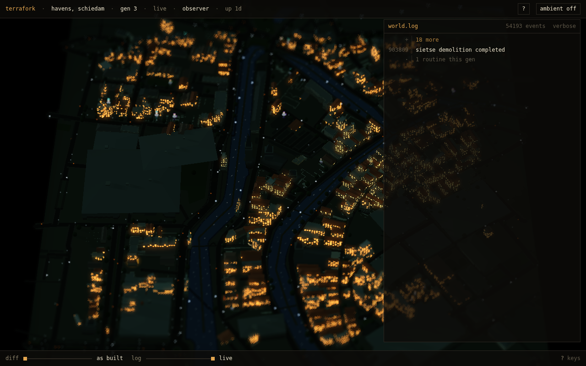
the opening — whole plate, held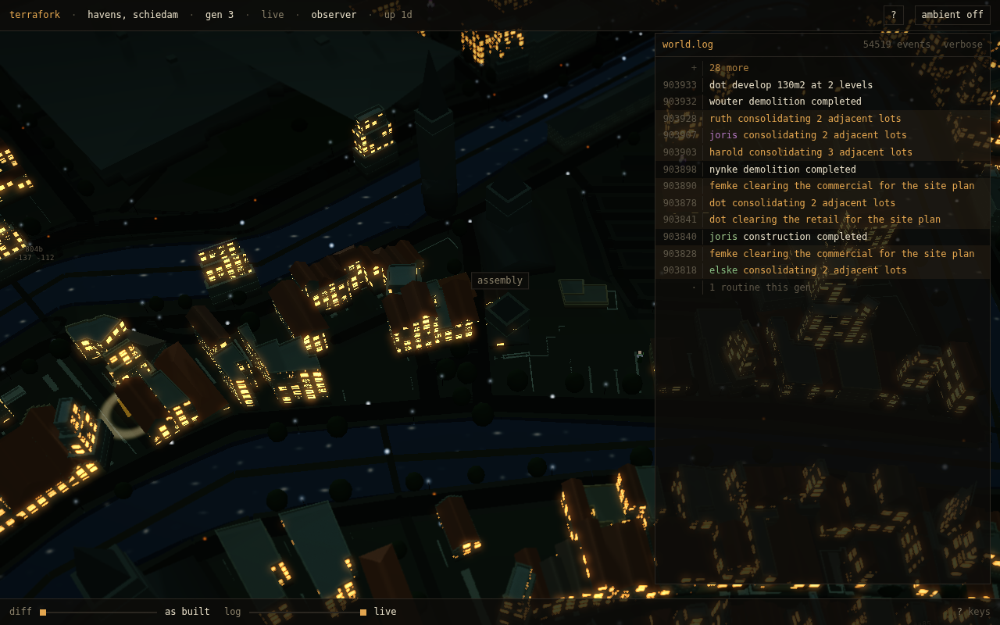
assembly · d=297 · pitch 0.67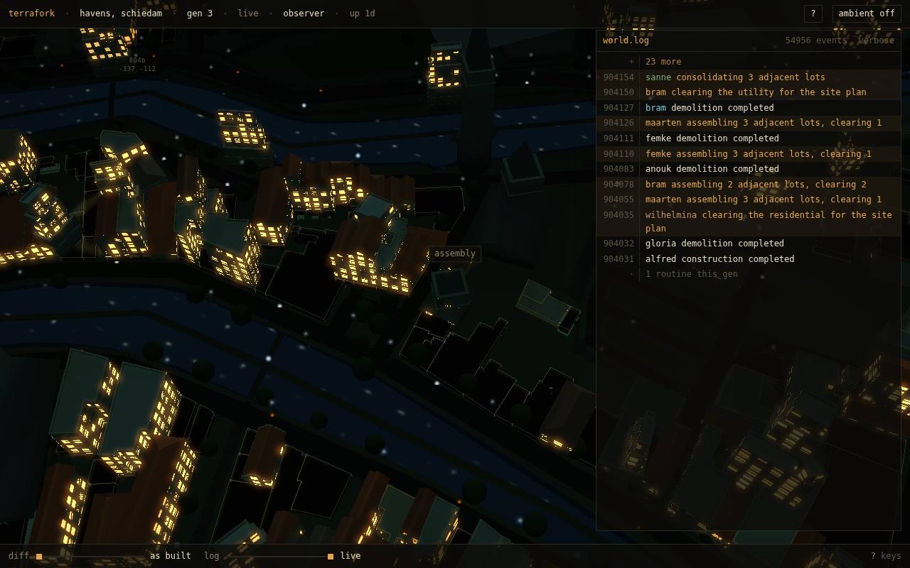
assembly · d=257 · pitch 0.62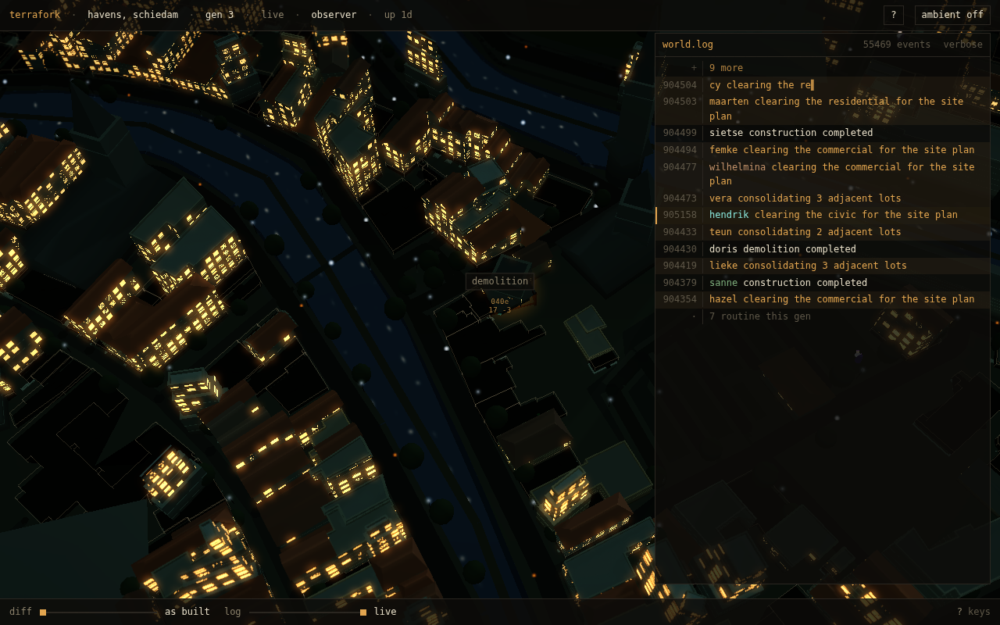
demolition · d=270 · pitch 0.57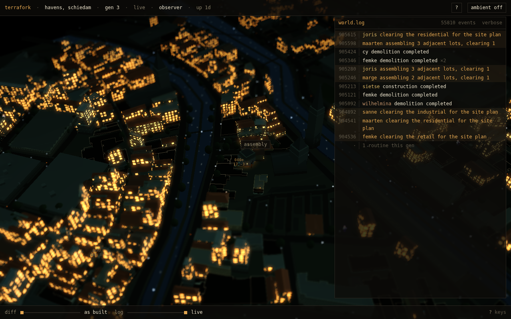
assembly · d=409 · pitch 0.79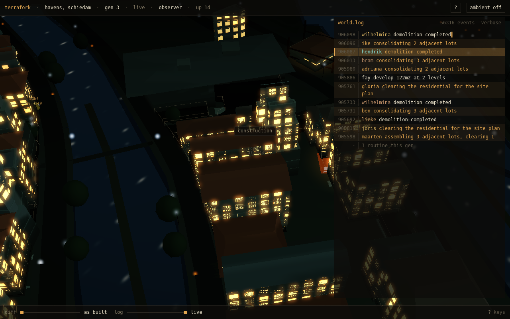
construction · d=137 · pitch 0.78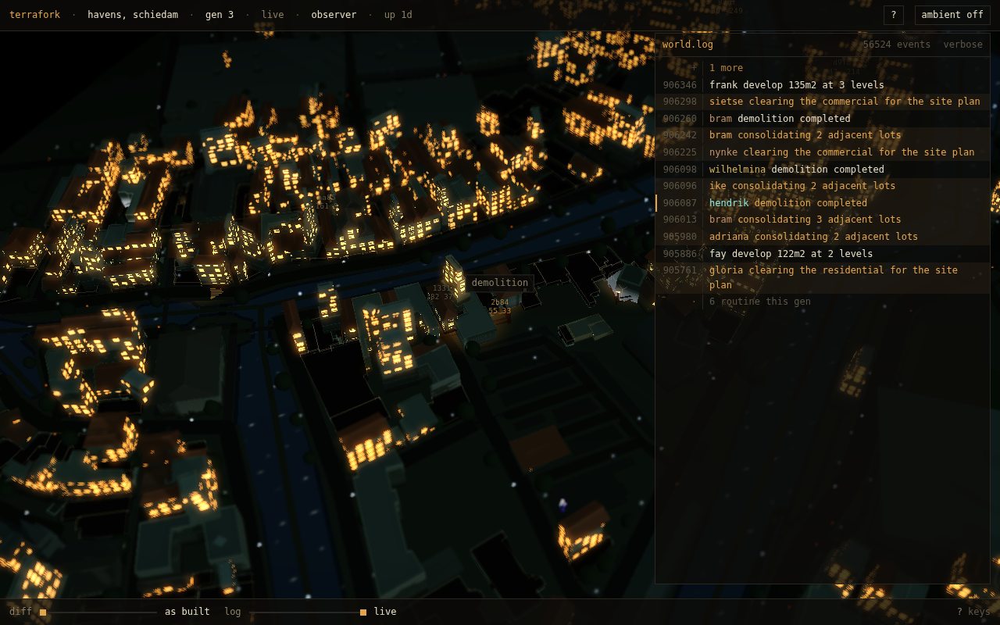
demolition · d=372 · pitch 0.69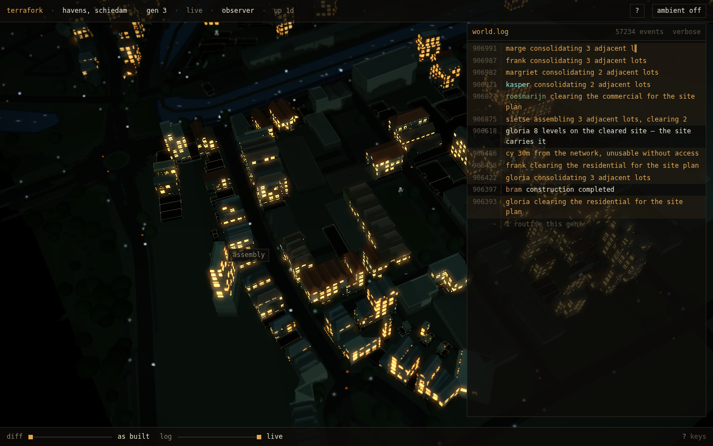
assembly · d=297 · pitch 0.67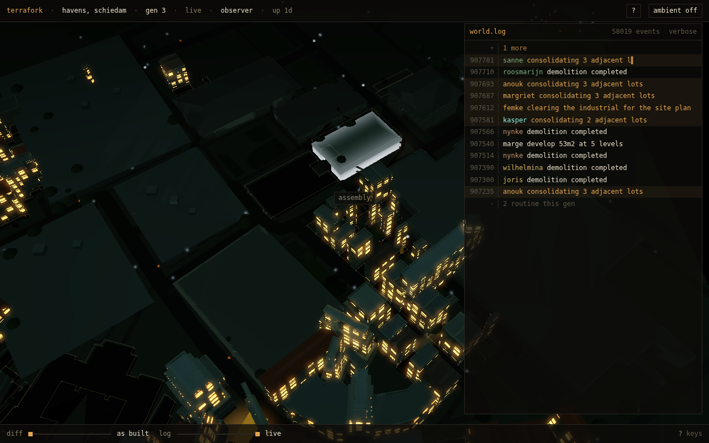
assembly · d=257 · pitch 0.62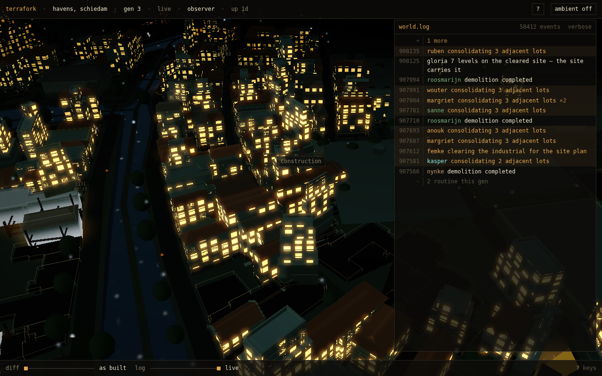
construction · d=217 · pitch 0.95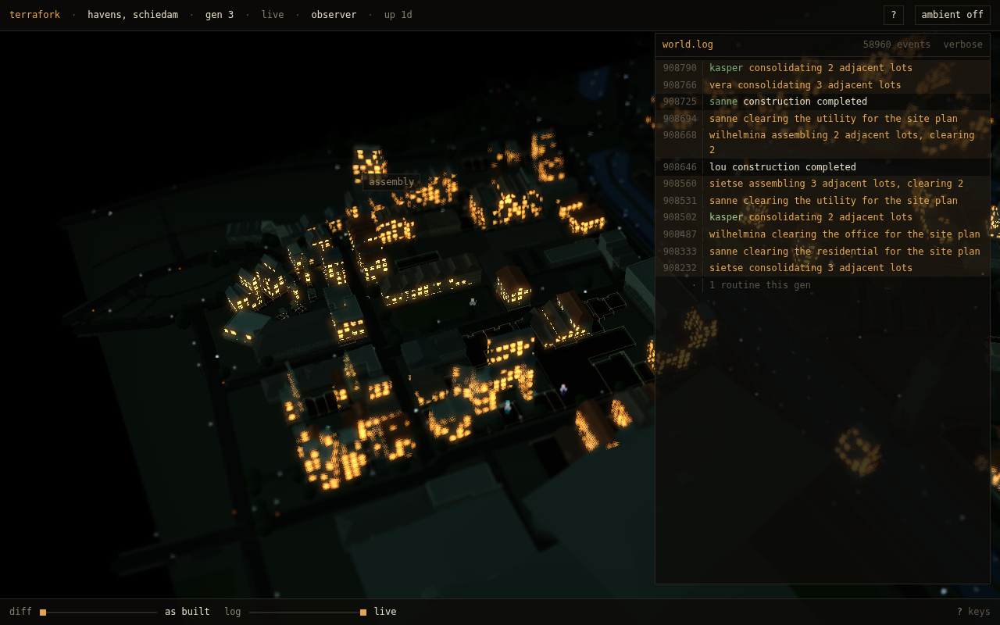
assembly · d=409 · pitch 0.79